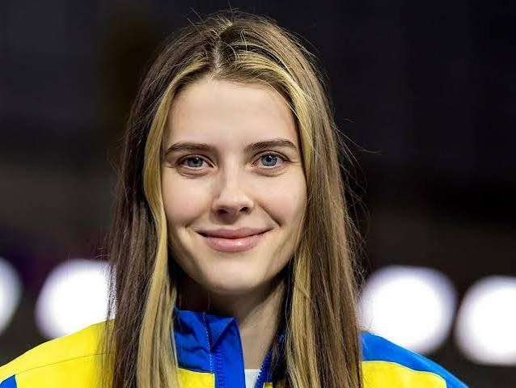

Шлях до вершини світового спорту

Ярослава Олексіївна Магучіх (нар. 19 вересня 2001 року, Дніпро) — видатна українська легкоатлетка, що спеціалізується на стрибках у висоту. Вона є володаркою чинного світового рекорду серед жінок — 2,10 м, який підкорився їй 7 липня 2024 року на етапі Діамантової ліги в Парижі, побивши досягнення Стефки Костадінової, яке трималося з 1987 року!
Спортивні оглядачі часто зазначають: Це історична висота, що відкрила нову еру в легкій атлетиці
. Її коронний стиль — це неймовірна концентрація, спокійний відпочинок перед змаганнями безпосередньо у секторі та фірмова косичка з жовто-блакитними стрічками.
Хімічна формула адреналіну в її крові під час сектору: C9H13NO3, а кінетична енергія стрибка описується рівнянням Ek = (m × v2)/2.
Багато експертів сумнівалися, що рекорд буде побито в цьому десятилітті, але Ярослава довела протилежне.
«Коли я виходжу на сектор, я стрибаю не лише за медалі, а насамперед за всю Україну, показуючи нашу незламність і силу духу усьому світу.»
— Ярослава Магучіх (World Athletics)
* Примітка: Інформація верифікована міжнародною асоціацією легкої атлетики.